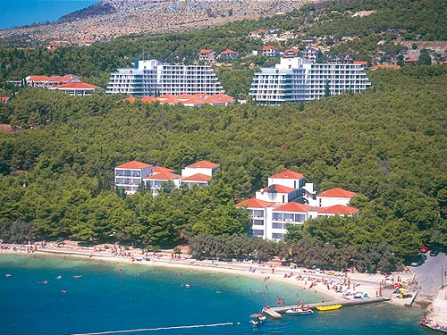
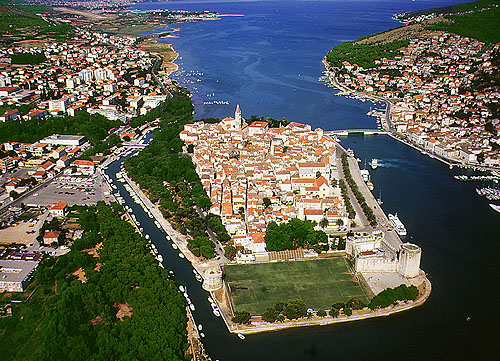

Accommodation for participants is arranged in Hotel Medena in Trogir.
All participants are kindly requested to make their own hotel reservation for the Conference.
Hotel reservations must be made before May 1, 2014 directly with the Hotel Medena. You can make on-line reservations using the hotel web page.
Please remark that you are a participant of the Conference MIA 2014.
 
The old town of Trogir was built by the Greeks in the 3rd century B.C. on the islet between the island Čiovo and the mainland. Today it represents the unique monumental entity and is entered into the UNESCO Register of the world cultural heritage.